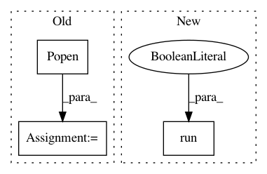

2728afcd57721b34f95ba575507a3db6c86c1f4c,tests/test_model_remote.py,,,#,151
Before Change
if __name__ == "__main__":
try:
file_path = os.path.dirname(os.path.realpath(__file__))
cpp_model = subprocess.Popen([os.path.join(file_path, "cpproblight/test_gum_marsaglia"), "tcp://*:5555"], preexec_fn=os.setsid)
cpp_model_with_replacement = subprocess.Popen([os.path.join(file_path, "cpproblight/test_gum_marsaglia_replacement"), "tcp://*:5556"], preexec_fn=os.setsid)
unittest.main(verbosity=2)
except KeyboardInterrupt:
print("Stopped")
After Change
docker_client.images.pull("probprog/cpproblight")
print("Docker image pulled.")
docker_client.containers.run("probprog/cpproblight", "/code/cpproblight/build/cpproblight/test_gum_marsaglia tcp://*:5555", network="host", detach=True)
GaussianWithUnknownMeanMarsagliaCPP = ModelRemote("tcp://127.0.0.1:5555")
docker_client.containers.run("probprog/cpproblight", "/code/cpproblight/build/cpproblight/test_gum_marsaglia_replacement tcp://*:5556", network="host", detach=True)
GaussianWithUnknownMeanMarsagliaWithReplacementCPP = ModelRemote("tcp://127.0.0.1:5556")
In pattern: SUPERPATTERN
Frequency: 3
Non-data size: 3
Instances
Project Name: pyprob/pyprob
Commit Name: 2728afcd57721b34f95ba575507a3db6c86c1f4c
Time: 2018-02-21
Author: atilimgunes.baydin@gmail.com
File Name: tests/test_model_remote.py
Class Name:
Method Name:
Project Name: kkroening/ffmpeg-python
Commit Name: de124673e0f54ed593884de78e5435b6c1119d9b
Time: 2018-06-02
Author: karlk@kralnet.us
File Name: examples/transcribe.py
Class Name:
Method Name: decode_audio
Project Name: bokeh/bokeh
Commit Name: f466b3ee2facd1fa3fd47096f978ac622f8412ab
Time: 2020-03-20
Author: mattpap@gmail.com
File Name: tests/codebase/test_flake8.py
Class Name:
Method Name: test_flake8